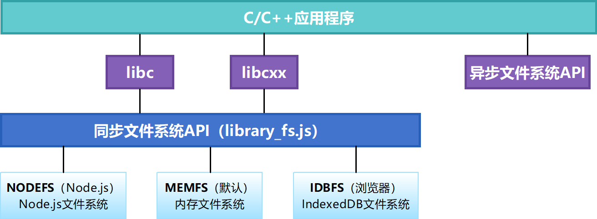
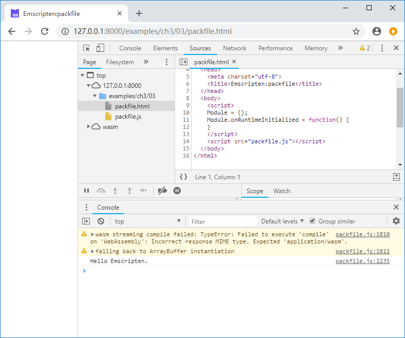
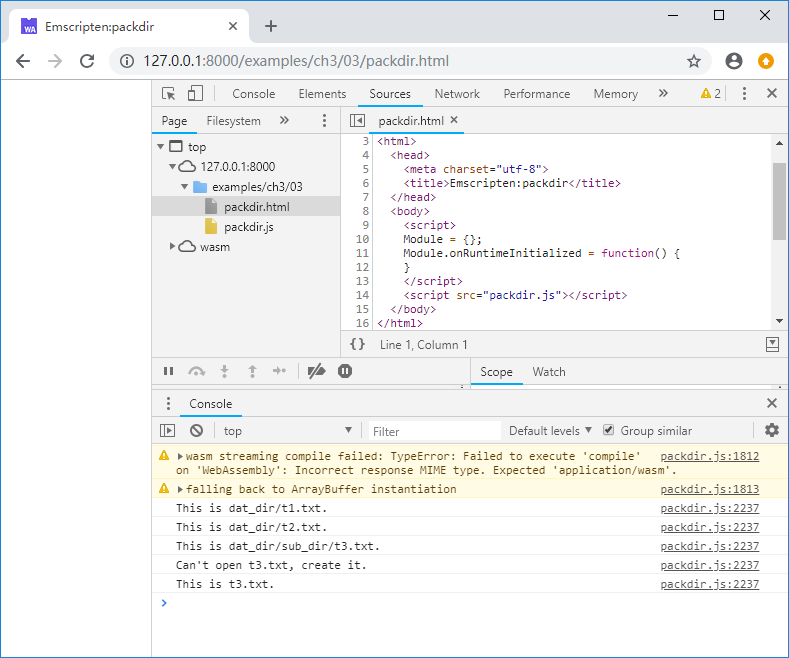
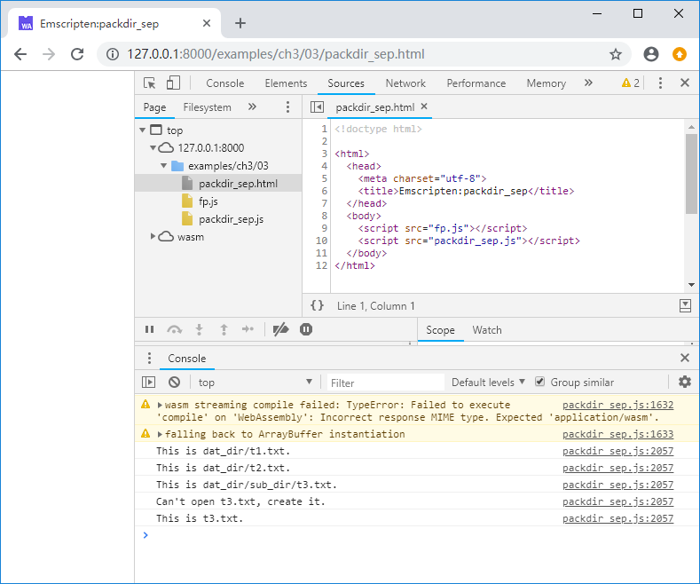
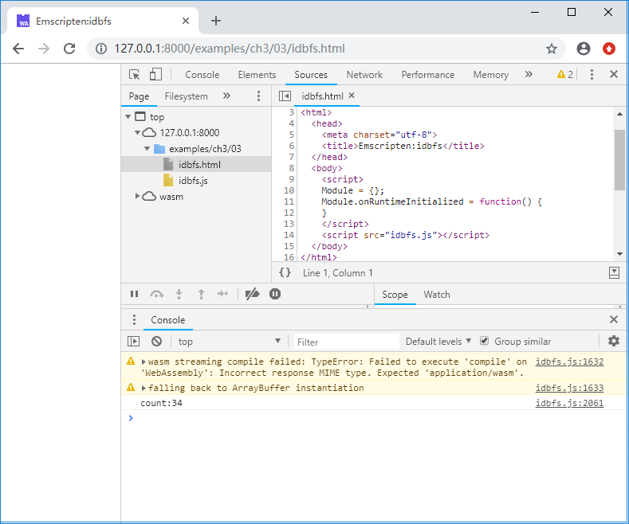

3.3 文件系统
跨平台的C/C++程序常使用fopen()/fread()/fwrite()等libc/libcxx提供的同步文件访问函数。在文件系统这一问题上，通常的JavaScript程序与C/C++本地程序有巨大的差异，主要体现在：
- 运行在浏览器中的JavaScript程序无法访问本地文件系统；
- 在JavaScript中，无论AJAX还是
fetch()，都是异步操作。
Emscripten提供了一套虚拟文件系统，以兼容libc/libcxx的同步文件访问函数。
3.3.1 Emscripten虚拟文件系统架构
Emscripten虚拟文件系统架构如下图：

tips 异步文件系统API是一组声明于emscripten.h中的函数，只能在Emscripten环境下使用，不符合本书“编译目标不敏感”的理念，故不予介绍。
在最底层，Emscripten提供了三种文件系统，分别为：
MEMFS：内存文件系统。该系统的数据完全存储于内存中，程序运行时写入的数据在页面刷新或程序重载后将丢失；NODEFS：Node.js文件系统。该系统可以访问本地文件系统，可以持久化存储，但只能用于Node.js环境；IDBFS：IndexedDB文件系统。该系统基于浏览器的IndexedDB对象，可以持久化存储，但只能用于浏览器环境。
Emscripten同步文件系统API通过JavaScript对象FS封装了上述三种文件系统，进而供fopen()/fread()/fwrite()等libc/libcxx文件访问函数调用。
从调用语法的角度来看，C/C++代码与生成本地代码时无异，但要注意不同的底层文件系统有各自的特性，以及由此引发的业务逻辑差异。Emscripten虚拟文件系统所包含的内容非常多，单独成书亦不为过，限于篇幅关系，本节简要介绍基于MEMFS的打包文件系统，NODEFS与IDBFS只给出简单例子，不作过多展开。
3.3.2 MEMFS/打包文件系统
文件导入MEMFS之前，需要先将其打包。文件打包可以在emcc命令行中完成，也可以使用单独的文件打包工具file_packager.py。
打包时有2种模式：embed以及preload。在embed模式下，文件数据被转换为JavaScript代码；在preload模式下，除了生成.js文件外，还会额外生成同名的.data文件，其中包含了所有文件的二进制数据，生成的.js文件中将包含.data文件包下载、装载操作的胶水代码。
tips
embed模式需要将数据文本化编码，所产生的文件包体积大于preload模式，因此除非需要打包的文件总数据量非常小，尽可能使用preload模式。
使用emcc命令时，--preload-file参数用于以preload模式打包指定文件或文件夹，相对的，--embed-file参数用于以embed模式打包指定的文件或文件夹。
例如C代码文件packfile.cc所在目录下有一个名为hello.txt的文本文件，在packfile.cc所在目录下执行以下命令：
emcc packfile.cc -o packfile.js --preload-file hello.txt
将生成packfile.js以及packfile.data。packfile.data中打包了hello.txt。C代码读取hello.txt文件内容并执行打印：
//packfile.cc
int main() {
FILE* fp = fopen("hello.txt", "rt");
if (fp) {
while (!feof(fp)) {
char c = fgetc(fp);
if (c != EOF) {
putchar(c);
}
}
fclose(fp);
}
return 0;
}
控制台将输出：

--preload-file参数不仅可以打包单个文件，还可以打包整个目录，例如C代码文件packdir.cc所在目录下有一个名为dat_dir.txt的文件夹，其结构如下：
|--packdir.cc
|--dat_dir
|--t1.txt
|--t2.txt
|--sub_dir
|--t3.txt
在packdir.cc所在目录下执行以下命令：
emcc packdir.cc -o packdir.js --preload-file dat_dir
将生成打包文件packdir.data，其中包括了dat_dir的所有内容。C代码如下：
//packdir.cc
void read_fs(const char* fname) {
FILE* fp = fopen(fname, "rt");
if (fp) {
while (!feof(fp)) {
char c = fgetc(fp);
if (c != EOF) {
putchar(c);
}
}
fclose(fp);
}
}
void write_fs() {
FILE* fp = fopen("t3.txt", "wt");
if (fp) {
fprintf(fp, "This is t3.txt.\n");
fclose(fp);
}
}
int main() {
read_fs("dat_dir/t1.txt");
read_fs("dat_dir/t2.txt");
read_fs("dat_dir/sub_dir/t3.txt");
write_fs();
read_fs("t3.txt");
return 0;
}
控制台将输出：

Emscripten使用UNIX风格的目录分隔符“/”，从C/C++代码的角度来看，打包文件将被载入当前路径下。载入打包文件后，可以创建文件及文件夹，并写入数据，但是这些写入的数据实际上位于JavaScript管理的内存中，当页面刷新后，所有的写入都会丢失。
位于<emsdk>/<sdk_ver>/tools/下的Python脚本file_packager.py可以单独执行文件打包，例如下列命令以preload模式将dat_dir目录打包为fp.data以及fp.js：
python emsdk/1.38.11/tools/file_packager.py fp.data --preload dat_dir --js-output=fp.js
使用外挂文件包时，主程序编译时必须增加-s FORCE_FILESYSTEM=1参数以强制启用文件系统，如：
emcc packdir.cc -o packdir_sep.js -s FORCE_FILESYSTEM=1
在网页中，必须先引入外挂文件包js，再引入主程序js：
//packdir_sep.html
<script src="fp.js"></script>
<script src="packdir_sep.js"></script>
上述例子在控制台输出依然为：

info 虽然下载文件包是异步的，但是Emscripten可以确保当运行时准备就绪时，文件系统初始化完成，因此在
Module.onRuntimeInitialized回调函数中使用文件系统是安全的。
3.3.3 NODEFS
下面是一个使用NODEFS的例子：
//nodefs.cc
void setup_nodefs() {
EM_ASM(
FS.mkdir('/data');
FS.mount(NODEFS, {root:'.'}, '/data');
);
}
int main() {
setup_nodefs();
FILE* fp = fopen("/data/nodefs_data.txt", "r+t");
if (fp == NULL) fp = fopen("/data/nodefs_data.txt", "w+t");
int count = 0;
if (fp) {
fscanf(fp, "%d", &count);
count++;
fseek(fp, 0, SEEK_SET);
fprintf(fp, "%d", count);
fclose(fp);
printf("count:%d\n", count);
}
else {
printf("fopen failed.\n");
}
return 0;
}
注意setup_nodefs()使用EM_ASM宏执行了挂接NODEFS的JavaScript脚本：FS.mkdir('/data')在虚拟文件系统中创建了“/data”目录，FS.mount(NODEFS, {root:'.'}, '/data')将当前的本地目录挂接到了上述目录。main()函数每次运行会打开/data/nodefs_data.txt——对应当前本地目录中的nodefs_data.txt，从中读取一个整数，加1后写回。用emcc编译上述代码：
emcc nodefs.cc -o nodefs.js
使用Node多次运行nodefs.js，输出如下：
> node nodefs.js
count:2
> node nodefs.js
count:3
> node nodefs.js
count:4
3.3.4 IDBFS
下面是一个使用IDBFS的例子：
void sync_idbfs() {
EM_ASM(
FS.syncfs(function (err) {});
);
}
EM_PORT_API(void) test() {
FILE* fp = fopen("/data/nodefs_data.txt", "r+t");
if (fp == NULL) fp = fopen("/data/nodefs_data.txt", "w+t");
int count = 0;
if (fp) {
fscanf(fp, "%d", &count);
count++;
fseek(fp, 0, SEEK_SET);
fprintf(fp, "%d", count);
fclose(fp);
printf("count:%d\n", count);
sync_idbfs();
}
else {
printf("fopen failed.\n");
}
}
int main() {
EM_ASM(
FS.mkdir('/data');
FS.mount(IDBFS, {}, '/data');
FS.syncfs(true, function (err) {
assert(!err);
ccall('test', 'v');
});
);
return 0;
}
与NODEFS类似，IDBFS的挂接是通过FS.mount()方法完成。事实上在运行时，IDBFS仍然是使用内存来存储虚拟文件系统，只不过IDBFS可以通过FS.syncfs()方法进行内存数据与IndexedDB的双向同步，以达到数据持久化存储的目的。FS.syncfs()是异步操作，因此在上述例子中，读写文件的test()函数必须在FS.syncfs()的回调函数中调用。上述程序在每次刷新页面后，控制台输出的count加1：
